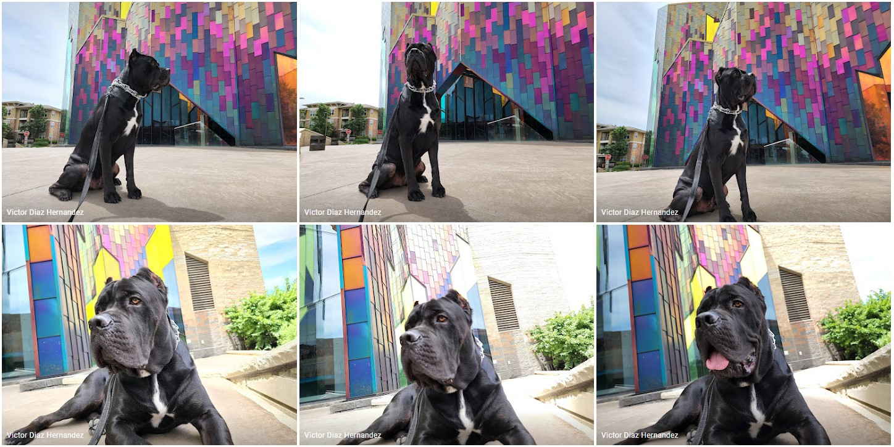

Drogo is a Cane Corso and was born in April 2022.
His name comes from a character of Game of Thrones, and he is a big boy weighing 130lbs! He is the guard of the house and loves playing with my nephews. He is extremely friendly once he gets introduced to new people. Drogo is on Tiktok! His daycare uploads videos he has lots of fans.
Once upon a time, there was a friendly guard dog named Drogo. He lived in a small village and his job was to protect the villagers and their homes. Despite his tough job, Drogo was known to be a kind and gentle dog. He would often play with the children and lick their faces, and the villagers loved him for his friendly personality.
One day, a thief entered the village and started to steal from the homes. The villagers were scared and didn't know what to do. But Drogo sprang into action. He chased the thief away and saved the village from the danger.
From that day on, Drogo was not just known as a friendly guard dog, but also as a hero. The villagers threw him a big party and gave him all the treats he could eat. Drogo was overjoyed and wagged his tail with pride.
From that day forward, Drogo continued to guard the village with love and protect the villagers with all his might. He lived a long and happy life, and the villagers never forgot the day their friendly guard dog named Drogo became a hero.
